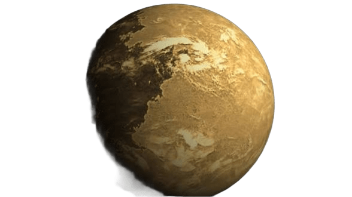
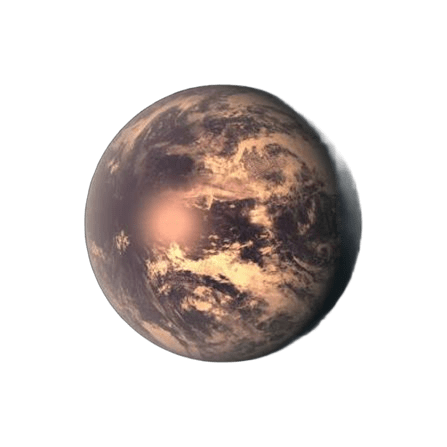
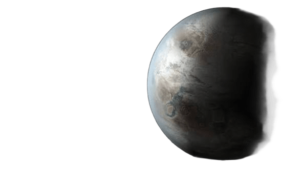
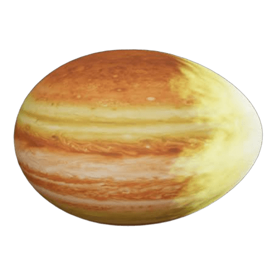
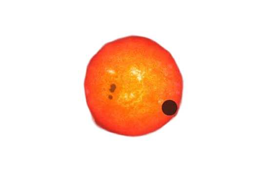

Proxima Centauri b
Es el exoplaneta rocoso más cercano a nuestro Sistema Solar, ubicado a tan solo 4.2 años luz. Orbita en la zona habitable de su estrella enana roja, aunque recibe mayor radiación ultravioleta que la Tierra.

TRAPPIST-1e
Uno de los candidatos más prometedores para la búsqueda de vida. Posee un tamaño y masa muy similares a la Tierra y forma parte de un sistema con siete planetas rocosos apretados alrededor de una pequeña estrella.

Kepler-452b
Conocido popularmente como el "primo lejano" de la Tierra. Orbita una estrella casi idéntica a nuestro Sol y su año dura aproximadamente 385 días, lo que lo convierte en uno de los hallazgos más fascinantes.

WASP-12b
Un gigantesco "Júpiter caliente" tan cercano a su estrella que la intensa gravedad lo está deformando con forma de huevo. Su atmósfera absorbe casi toda la luz, volviéndolo extremadamente oscuro.

GJ 1214 b
Una "supertierra" envuelta por una atmósfera espesa de vapor. Los astrónomos sugieren que podría tratarse de un mundo acuático gigantesco con un océano global cubierto por capas de alta presión.